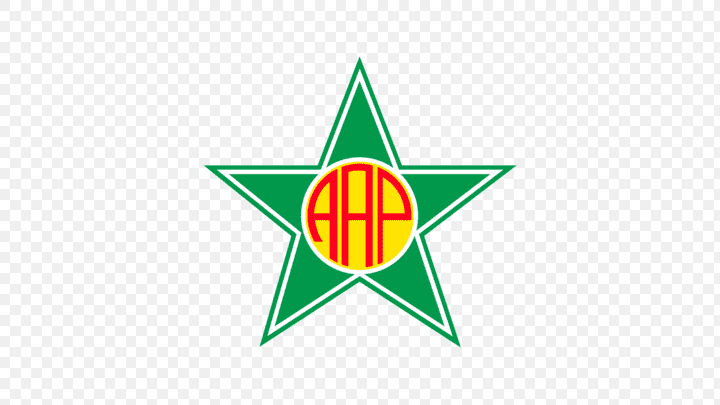

Último Jogo - Intercontinental


FLAMENGO
1 - 1
PSG
📅 17/12/2025
Próximo Jogo - Carioca
FLAMENGO
VS

PORTUGUESA-RJ
🏟️ Raulino de Oliveira (Volta Redonda-RJ)
🗓️ Dom, 11/01/2026 às 18h
📺 Globo, Premiere, FlaTV
🗓️ Dom, 11/01/2026 às 18h
📺 Globo, Premiere, FlaTV